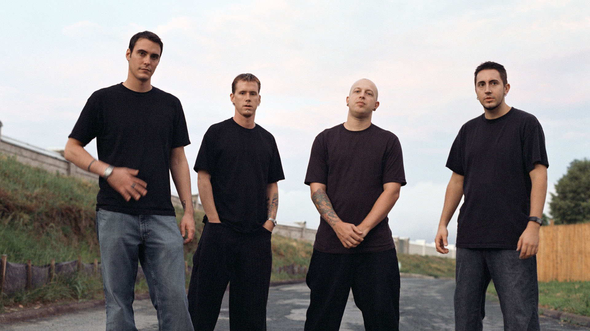

Los inicios y el «micrófono roto»

Benjamin nació en Atlantic City, Nueva Jersey (1978). Su interés por la música empezó temprano, influenciado por el grunge de Nirvana. El origen del nombre: El nombre "Breaking Benjamin" surgió de un accidente real. Mientras Ben tocaba en un club, tomó prestado el micrófono de un tercero y lo rompió sin querer. El dueño del micrófono subió al escenario y dijo: "I'd like to thank Benjamin for breaking my f*ing microphone" (Quiero agradecer a Benjamin por romper mi maldito micrófono).
La banda antes de Saturate y la formación actual
Antes del lanzamiento de Saturate (2002), Breaking Benjamin ya era un cuarteto. En ese debut, la banda estaba formada por:
Formación en la época de Saturate



Más adelante, Chad Szeliga ocupó la batería y, junto a Burnley, Fink y Klepaski, conformó la formación que acompañó gran parte de los discos posteriores (We Are Not Alone, Phobia, Dear Agony) hasta los conflictos internos y la pausa de la banda.
Formación actual
Tras el regreso de Breaking Benjamin (2015 en adelante), la alineación quedó centrada de nuevo en Burnley y en músicos que lo acompañan en gira y estudio:


El ascenso al estrellato (2002–2009)

Recompilación en vídeo de las canciones de Saturate, con título de cada tema y letras en pantalla (~50 min). El vídeo está centrado debajo de la carátula.
Tras formar Breaking Benjamin, el debut Saturate (2002) marcó el sonido melódico y potente de la banda. Le siguieron We Are Not Alone (2004) y Phobia (2006), con temas como «The Diary of Jane», que las llevó a salas cada vez mayores y a la radio. La etapa cerró con Dear Agony (2009): una década en la que el nombre Breaking Benjamin quedó ligado al rock alternativo estadounidense.